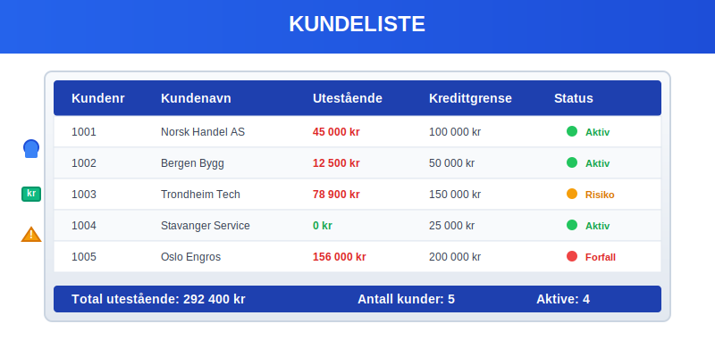
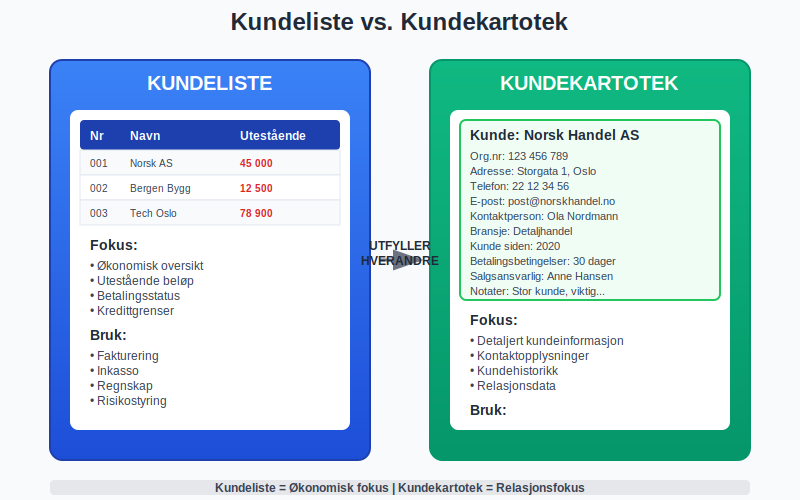
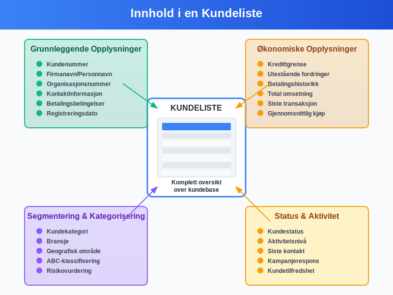
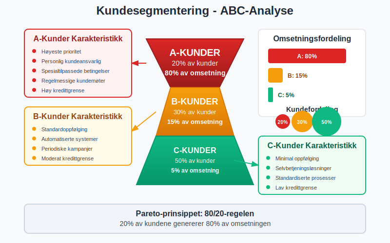
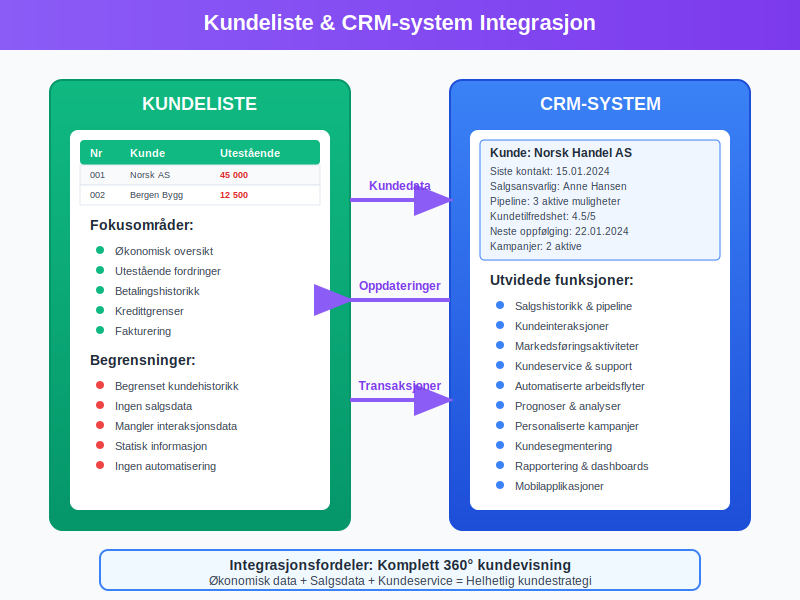
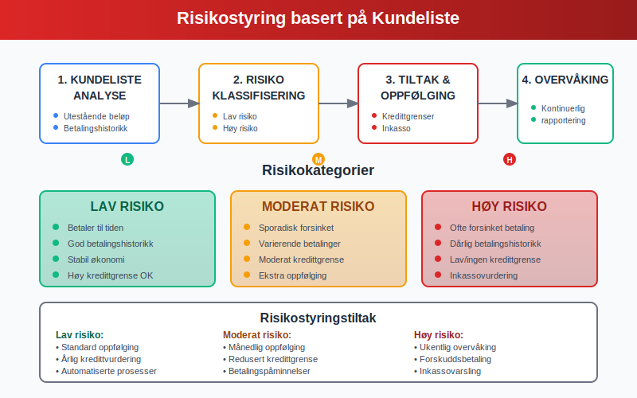
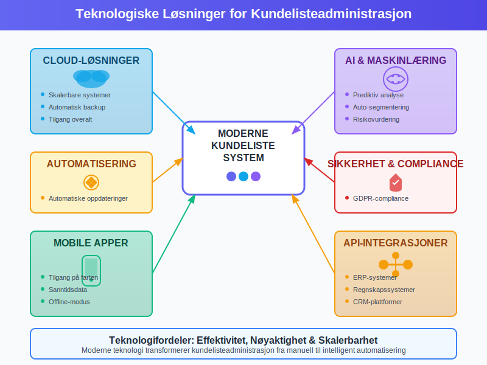

En kundeliste er et systematisk register over alle kunder som et foretak har forretningsforhold med. Dette er et grunnleggende verktøy innen regnskap og kundeadministrasjon som gir oversikt over kundebase, betalingshistorikk og økonomiske forhold.

Definisjon av Kundeliste
En kundeliste er en strukturert oversikt over alle registrerte kunder i et foretak. Listen inneholder viktige opplysninger som:
- Kundens navn og kontaktinformasjon
- Kundenummer eller identifikasjon
- Betalingshistorikk og kredittgrenser
- Utestående fordringer og fakturaer
- Handelsvolum og kjøpsmønster
Kundelisten fungerer som et sentralt register som kobler sammen salg, fakturering og regnskap, og er essensielt for effektiv kundeadministrasjon.
Forskjell mellom Kundeliste og Kundekartotek
Mens en kundekartotek inneholder detaljerte opplysninger om hver enkelt kunde, er kundelisten en oversikt som viser alle kunder samlet. Kundelisten er ofte mer fokusert på økonomiske aspekter som utestående beløp og betalingshistorikk.

Innhold i en Kundeliste
Grunnleggende Kundeopplysninger
En komplett kundeliste bør inneholde følgende grunnleggende informasjon:
- Kundenummer - Unik identifikator for hver kunde
- Firmanavn/Personnavn - Fullstendig navn på kunden
- Organisasjonsnummer - For bedriftskunder
- Kontaktinformasjon - Adresse, telefon, e-post
- Betalingsbetingelser - Kredittdager og betalingsvilkår
Økonomiske Opplysninger
For regnskapsformål er følgende økonomiske data kritisk:
- Kredittgrense - Maksimalt tillatt utestående beløp
- Utestående fordringer - Aktuelle kundefordringer
- Betalingshistorikk - Tidligere betalingsmønster
- Omsetning - Totalt salgsvolum per periode
- Siste transaksjon - Dato for siste kjøp eller betaling
Segmentering og Kategorisering
Moderne kundelister inkluderer ofte segmenteringsdata:
- Kundekategori - Privat, bedrift, offentlig sektor
- Bransje - For bedriftskunder
- Geografisk område - Region eller marked
- Kundeverdisegment - A, B, C-kunder basert på verdi
- Risikovurdering - Kredittvurdering og betalingsrisiko

Typer Kundelister
Aktive vs. Passive Kunder
Kundelister kan organiseres etter aktivitetsnivå:
| Kundetype | Definisjon | Oppfølging |
|---|---|---|
| Aktive kunder | Kunder med transaksjoner siste 12 måneder | Regelmessig kontakt og tilbud |
| Passive kunder | Kunder uten nylige transaksjoner | Reaktiveringskampanjer |
| Sovende kunder | Kunder uten aktivitet over 24 måneder | Vurder arkivering |
| Tapte kunder | Kunder som har avsluttet forholdet | Analyse av årsaker |
Segmenterte Kundelister
ABC-Analyse av Kunder
A-kunder (20% av kunder, 80% av omsetning):
- Høyeste prioritet i oppfølging
- Personlig kundeansvarlig
- Spesialtilpassede betalingsbetingelser
- Regelmessige kundemøter
B-kunder (30% av kunder, 15% av omsetning):
- Standardoppfølging
- Automatiserte systemer for fakturering
- Periodiske tilbud og kampanjer
C-kunder (50% av kunder, 5% av omsetning):
- Minimal oppfølging
- Selvbetjeningsløsninger
- Standardiserte prosesser
Bransjespesifikke Kundelister
Ulike bransjer har spesialiserte behov for kundelister:
- Detaljhandel - Fokus på kjøpsfrekvens og sesongvariasjoner
- B2B-salg - Vekt på kontraktsverdier og fornyelser
- Tjenesteyting - Abonnement og gjentakende inntekter
- Produksjon - Leveransetider og volumrabatter

Juridiske og Regnskapsmessige Krav
Bokføringsloven og Kundelister
I henhold til bokføringsloven må foretak:
- Registrere alle kunder som har forretningsforhold med foretaket
- Oppbevare kundedata i minimum 5 år etter siste transaksjon
- Sikre sporbarhet mellom kundeliste og regnskapsbilag
- Dokumentere endringer i kundeopplysninger
GDPR og Personvern
Kundelister som inneholder personopplysninger må følge GDPR-krav:
- Samtykke til lagring og behandling av persondata
- Rett til innsyn - Kunder kan kreve kopi av sine opplysninger
- Rett til sletting - Kunder kan kreve sletting av data
- Datasikkerhet - Beskyttelse mot uautorisert tilgang
- Oppbevaringstid - Ikke lagre data lenger enn nødvendig
Regnskapsstandard for Kundefordringer
Kundelisten må være konsistent med regnskapsføring av:
- Kundefordringer - Utestående fakturaer
- Avsetninger - For tapsutsatte fordringer
- Nedskrivninger - Av fordringer som ikke kan inndrives
- Periodisering - Av inntekter og kostnader
Digitale Kundelister og CRM-systemer
Moderne Kundelistesystemer
Dagens digitale løsninger tilbyr avansert funksjonalitet:
- Automatisk oppdatering fra salgs- og faktureringssystemer
- Sanntidsrapportering av kundedata og fordringer
- Integrasjon med ERP-systemer
- Mobilapplikasjoner for tilgang på farten
- Kunstig intelligens for kundeanalyse og prognoser
CRM-integrasjon
Customer Relationship Management (CRM) systemer utvider kundelisten med:
- Salgshistorikk og kundeinteraksjoner
- Markedsføringsaktiviteter og kampanjerespons
- Kundeservice og supporthenvendelser
- Salgsprognoser og pipeline-analyse
- Automatiserte arbeidsflyter for oppfølging

Praktisk Bruk av Kundelister
Daglig Drift
Kundelisten brukes daglig til:
- Fakturering - Identifisere kunder for utsendelse av fakturaer
- Betalingsoppfølging - Spore utestående fordringer
- Kredittvurdering - Vurdere nye kunders kredittverdighet
- Kundeservice - Rask tilgang til kundeinformasjon
- Salgsoppfølging - Identifisere salgsmuligheter
Rapportering og Analyse
Kundeanalyse
Kundelisten gir grunnlag for strategiske analyser:
- Kundefordeling - Geografisk og demografisk spredning
- Omsetningsanalyse - Bidrag fra ulike kundesegmenter
- Betalingsanalyse - Identifisere betalingsmønstre
- Churn-analyse - Forstå hvorfor kunder forsvinner
- Lifetime Value - Beregne kunders totale verdi
Nøkkeltall fra Kundelisten
| Nøkkeltall | Beregning | Formål |
|---|---|---|
| Gjennomsnittlig kundeverdier | Total omsetning / Antall kunder | Benchmarking |
| Kundekonsentrasjon | Top 10 kunder / Total omsetning | Risikovurdering |
| Betalingstid | Gjennomsnittlig dager fra faktura til betaling | Likviditetsstyring |
| Kundetilfredshet | Andel kunder med gjentakskjøp | Kvalitetsmåling |
Risikostyring
Kundelisten er sentral for kredittrisikostyring:
- Kredittgrenser - Sette og overvåke maksimale utestående beløp
- Risikoklassifisering - Kategorisere kunder etter betalingsrisiko
- Overvåking - Identifisere kunder med betalingsproblemer
- Inkasso - Systematisk oppfølging av forfalte fordringer

Beste Praksis for Kundelisteadministrasjon
Datavedlikehold
For å sikre datakvalitet bør foretak:
- Regelmessig oppdatering - Verifiser kontaktinformasjon kvartalsvis
- Duplikatkontroll - Identifiser og slå sammen duplikate poster
- Validering - Kontroller organisasjonsnummer og adresser
- Arkivering - Flytt inaktive kunder til arkiv
- Backup - Sikkerhetskopier kundedata regelmessig
Sikkerhet og Tilgangskontroll
Kundelister inneholder sensitiv informasjon og krever:
- Tilgangsstyring - Kun autorisert personell har tilgang
- Kryptering - Beskytt data både i hvile og under overføring
- Loggføring - Spor hvem som har tilgang til hvilke data
- Regelmessige revisjoner - Kontroller tilganger og sikkerhet
- Opplæring - Sikre at ansatte forstår sikkerhetskrav
Integrasjon med Andre Systemer
Effektiv kundelisteadministrasjon krever sømløs integrasjon med:
- Faktureringssystem - Automatisk oppdatering av kundedata
- Regnskapssystem - Synkronisering av fordringer og betalinger
- Lagersystem - Koble kundeordrer til lagerføring
- Markedsføringssystem - Segmentering for målrettede kampanjer
- Rapporteringssystem - Automatiserte kundeanalyser
Utfordringer og Løsninger
Vanlige Utfordringer
Datakvalitet
Problem: Utdaterte eller feilaktige kundeopplysninger Løsning: Implementer automatiserte valideringsrutiner og regelmessige dataoppryddinger
Duplikater
Problem: Samme kunde registrert flere ganger Løsning: Bruk automatisk duplikatdeteksjon og etabler klare rutiner for kunderegistrering
Integrasjon
Problem: Kundedata spredt på flere systemer Løsning: Implementer en sentral kundemaster med API-integrasjoner
Personvern
Problem: Kompliserte GDPR-krav Løsning: Implementer personvernverktøy og etabler klare rutiner for databehandling
Teknologiske Løsninger
Moderne teknologi tilbyr innovative løsninger:
- Maskinlæring - Automatisk kategorisering og risikovurdering
- API-integrasjoner - Sanntidssynkronisering mellom systemer
- Cloud-løsninger - Skalerbare og sikre kundelistesystemer
- Mobile apper - Tilgang til kundedata på farten
- Automatisering - Redusere manuelt arbeid med datavedlikehold

Fremtiden for Kundelister
Trender og Utviklingstrekk
Kunstig intelligens vil revolusjonere kundelisteadministrasjon:
- Prediktiv analyse - Forutsi kundeadferd og betalingsmønstre
- Automatisk segmentering - AI-drevet kundekategorisering
- Personalisering - Skreddersydde tilbud basert på kundedata
- Chatbots - Automatisert kundeservice og dataoppdatering
Blockchain-teknologi kan forbedre:
- Datasikkerhet - Uforanderlige kunderegistre
- Tillit - Verifiserbare kundetransaksjoner
- Compliance - Automatisk overholdelse av regelverk
Regulatoriske Endringer
Fremtidige regulatoriske krav kan inkludere:
- Økt transparens - Krav om åpenhet i kundedata
- Strengere personvern - Utvidede GDPR-lignende regelverk
- Standardisering - Felles formater for kundedata
- Sanntidsrapportering - Krav om øyeblikkelig tilgang til kundedata
Konklusjon
En velorganisert kundeliste er fundamentet for effektiv kundeadministrasjon og regnskapsføring. Den gir ikke bare oversikt over kundebase og utestående fordringer, men fungerer også som grunnlag for strategiske beslutninger og risikostyring.
Moderne digitale løsninger har transformert kundelisteadministrasjon fra manuelle registre til sofistikerte systemer som integrerer salg, regnskap og kundeservice. Ved å følge beste praksis for datavedlikehold, sikkerhet og integrasjon kan foretak maksimere verdien av sin kundeliste.
For å lykkes med kundelisteadministrasjon er det essensielt å:
- Investere i riktige teknologiske løsninger som støtter forretningsbehovene
- Etablere klare rutiner for datavedlikehold og kvalitetssikring
- Sikre compliance med juridiske krav og personvernregelverk
- Utnytte data for strategiske analyser og forbedret kundeservice
- Forberede seg på fremtidige trender innen teknologi og regulering
En godt administrert kundeliste er ikke bare et regnskapsverktøy, men en strategisk ressurs som kan drive vekst og lønnsomhet i enhver virksomhet.